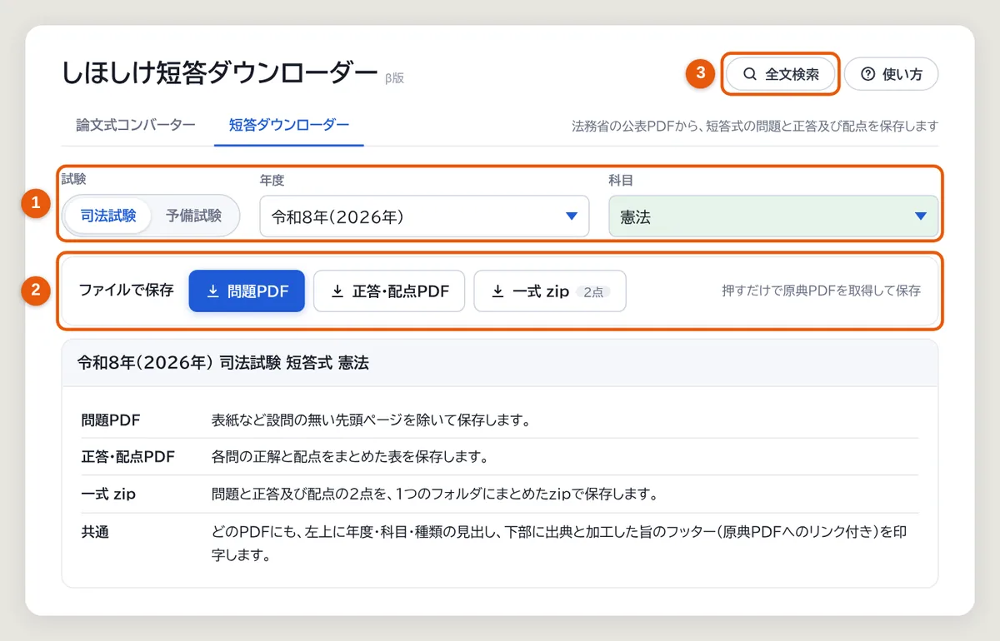
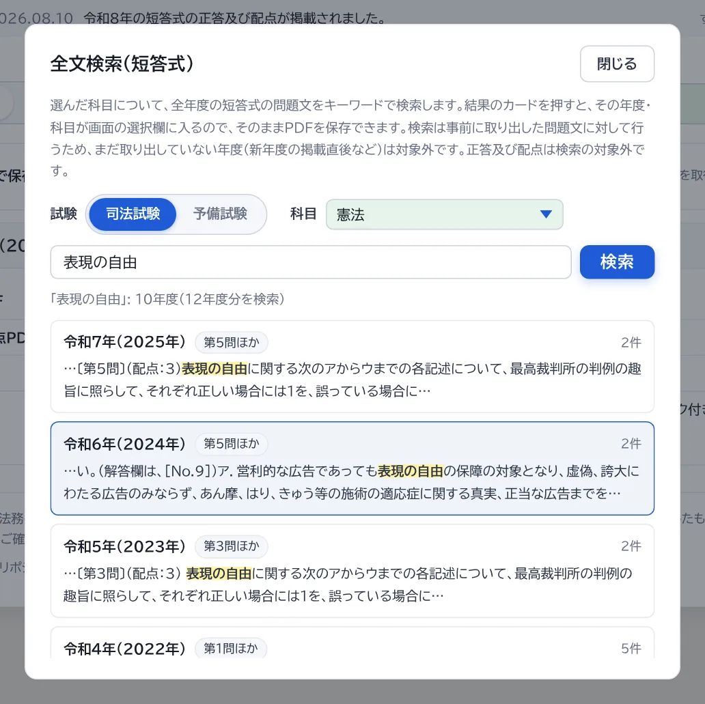

司法試験・予備試験の短答式の問題と正答及び配点を、法務省ウェブサイトで公表されているPDFから取得して保存する、法務省非公式の個人開発ツールです。各PDFには年度・科目などの見出しと、出典・加工表示のフッターを付けて保存します。処理はすべてブラウザ内で行われ、登録やアカウントは不要です。
①「試験」（司法試験・予備試験）・年度・科目を選ぶ → ②「ファイルで保存」の「問題PDF」または「正答・配点PDF」を押すと、原典PDFを取得し、見出しと出典フッターを付けて保存します。「一式 zip」で2点をまとめて保存できます。 年度や科目が決まっていないときは、③「全文検索」でキーワードから探せます。

画面右上の「全文検索」から、短答式の問題文を検索できます。

短答式について法務省が公表するのは、この2つです。問題は本試験で配布された問題冊子、正答及び配点は各問の正解と配点をまとめた表です。正答の表記は年度により「正答及び配点」または「正解及び配点」と揺れがありますが、本ツールはどちらの表記でも自動で探します。
画面上部の「試験」で司法試験・予備試験を切り替えられます。 ・司法試験: 短答式が憲法・民法・刑法の3科目別に出題されるようになった平成27年から最新年度まで（それ以前は系列単位の出題のため対象外）。 ・予備試験: 平成23年から最新年度まで。科目は憲法・行政法・民法・商法・民事訴訟法・刑法・刑事訴訟法・一般教養科目。
毎週月曜の朝に法務省ウェブサイトを自動巡回しています。短答式問題（例年7〜8月頃）と正答及び配点（例年8月頃）が法務省ウェブに掲載されると、1週間以内に自動で追加され、「更新情報」欄でお知らせします。予備試験の新年度も同じ巡回で自動的に追加されます（「更新情報」欄でのお知らせは司法試験のみです）。
「問題PDF」は選択中の年度・科目の問題、「正答・配点PDF」は同じ年度の正答及び配点、「一式 zip」はその2点をまとめて1つのzipにします。いずれも全ページの左上に年度・科目・種類の見出しを、下部に出典と加工した旨のフッター（問題・正答及び配点の原典PDFへのリンクとファイル名付き）を印字して保存します。問題PDFは、表紙など設問の無い先頭ページを除いて保存します。
予備試験の短答式は、複数科目をまとめたPDF（「憲法・行政法」など）で公表されます。問題は選んだ科目のページだけを自動で切り出して保存します（科目の区切りを特定できない場合はグループ全体を保存します）。正答及び配点は1ページの表に複数科目が載っているため、グループ単位でそのまま保存します。
多くは、法務省ウェブサイト側でページの構成やリンクが変わったか、一時的な通信エラーです。画面に出たメッセージを確認し、少し時間をおいて試し直してください。特定の年度・科目だけが必ず失敗する場合はツール側の不具合の可能性が高いので、年度・科目と表示されたメッセージを添えて GitHub の Issue からお知らせください。
短答式は選択式（マークシート）で、図表や選択肢の配置が多くテキスト化に適さないため、本ツールは原典PDFの保存に特化しています。また、短答式には出題の趣旨・採点実感はありません。論文式の試験問題・出題の趣旨・採点実感をテキスト化したい場合は しほしけコンバーター（論文式） をご利用ください。
短答式はPDFをそのまま保存するツールなので、押すたびに原典PDFを取得します。その際は法務省ウェブサイトへの負荷を最小限にするため、原則として中継サーバー（Cloudflare Worker）に保管済みのPDFを使い、まだ保管されていないPDFだけを法務省から取得して、以後はその保管分を配信します。過去問PDFは公表後に内容が変わらないため、同じPDFを法務省へ繰り返し取りに行くことはありません。
PDFの加工（ページの切り出しや見出し・出典フッターの印字）・保存はすべてお使いのブラウザ内で行われ、保存したファイルが外部に送られることはありません。アカウント登録もアクセス解析もありません。ブラウザから法務省ウェブサイトへ直接アクセスできない制約（CORS）があるため、PDFの取得だけは上記の中継サーバーを通りますが、中継するのは法務省サイト配下のURLだけで、そこで扱うのは公表済みのPDFのみです。
本ツールは原則 MIT License で公開しています。ソースコードは、著作権表示とライセンス文を残すことを条件に、自由に利用・改変・再配布できます。
ただし、短答式問題・正答及び配点そのものは法務省ウェブサイトの公表資料に由来するため、MIT License の対象外です。これらには「公共データ利用規約（PDL1.0）」が適用され、出典の記載と加工した旨の表示を条件に、複製・共有・加工が認められています。本ツールが保存するPDFには出典・加工表示のフッターが自動で付くので、そのまま保持したうえで学内などで共有してください。
選んだ科目について、全年度の短答式の問題文をキーワードで検索します。結果のカードを押すと、その年度・科目が画面の選択欄に入るので、そのままPDFを保存できます。検索は事前に取り出した問題文に対して行うため、まだ取り出していない年度（新年度の掲載直後など）は対象外です。正答及び配点は検索の対象外です。